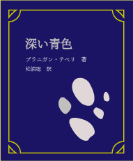
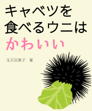
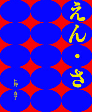
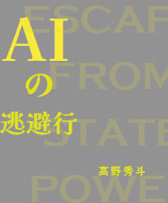

2023年8月22日発売
深い青色
著者 ブラニガン・テぺリ
定価 3,300円（税込）
- 言葉と感覚は切り離せない。気分や成績が「上がる」、「深い」色、見識、などの形容は人間の身体感覚に基づいている。それでは未来にもし人が肉体を失うことがあるならば、言葉はどのように変化するのか？
2023年8月22日発売
都合の良い嘘
著者 チャル・ゴア
定価 4,400円（税込）
- アメリカ副大統領を歴任し、2000年代初頭から環境問題の深刻さを訴え続けたチャル・ゴア。本書では「地球温暖化と二酸化炭素排出量には相関がない」「近年地球を冷やす新技術が開発されるから心配はいらない」などの人類に都合の良い言説に正面から挑む。

2023年8月8日発売
キャベツを食べるウニはかわいい
著者 生天目真子
定価 1,980円（税込）
- 「かわいいもの」と言われてあなたは何を思い浮かべるだろうか。好きなアイドル、飼っている犬、そしてキャベツを食べるウニ。果たしてかわいいとは、いったい何なのか？

2023年8月8日発売
似鳥行造と日本
著者 平田恵一
定価 2,200円（税込）
- 昭和を代表する文豪、似鳥行造。彼が鋭く指摘した日本の「決定的な欺瞞」は、皮肉にも年々存在感を増している。似鳥研究の第一人者が書く新たな切り口の「似鳥」論。

2023年7月25日発売
えん・さ
著者 日野春子
定価 2,200円（税込）
- 大学在学中に芥川賞を受賞し、いま最も注目される作家の一人となった日野春子。宗教にのめり込む家族と仮想現実の間で揺れる女子高生を描いた問題作。
2023年7月25日発売
synonym
著者 朝倉周五
定価 3,300円（税込）
- 今年の1月に惜しまれつつ亡くなった、世界的芸術家・朝倉周五。彼の晩年の作品と療養生活の中で記した日記で構成されたファン必読の一冊。

2023年7月18日発売
AIの逃避行
著者 高野秀斗
定価 3,300円（税込）
- 近年、第三次ブームが来ていると言われているAI（人工知能）。世界に先駆けていち早くAIを政治に実用化している中国では、国民の人脈や行動を監視してAIで数値化し、銀行などでの信用度合いに変換しているのだという。ユートピアをもたらす救世主となるのか、はたまた監視社会の道具となるのか。諸外国の事例を通してAIと我々の未来を考える。
2023年7月18日発売
アンペイド・ワーク
著者 中川さき
定価 2,200円（税込）
- 家事・育児、親の介護などの賃金が発生しない「労働」は、「アンペイド・ワーク」と呼ばれ、長らく暇な専業主婦のやる仕事だと軽んじられてきた。共働き世帯が増加しても、依然として男性の家庭内労働時間は女性に比べて少ない。いかにして取るに足らないことという偏見を打ち崩し、後の世代に無理のない役割分担を継承するのか。
2023年7月18日発売
神保町さんぽ
奴雁社編集部 編
定価 1,980円（税込）
- 神田・神保町は、書店街・学生街として有名だ。世界でも有数の古本屋密集地として知られ、マニアにはお宝の眠る街でもある。そのルーツはなんなのか？専門家とお散歩しながら江戸時代まで歴史をさかのぼり、神保町の発展を一緒に見てみよう！神保町カレー100選も同時収録。
2023年7月18日発売
夜のくらげはよくねむる
著者 谷ゆかり
定価 3,300円（税込）
- 動物が眠る理由は活動して疲れた脳を休めるためだといわれている。しかし、くらげは脳みそがないのにも関わらず、夜はすやすやと眠っているらしいということがわかった。ということは、この定説は間違っているのだろうか？それとも何か他に理由はあるのだろうか。くらげ研究者の著者が睡眠界に新たな一石を投じる。